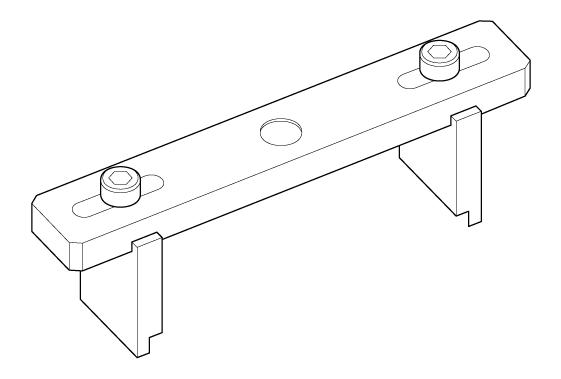
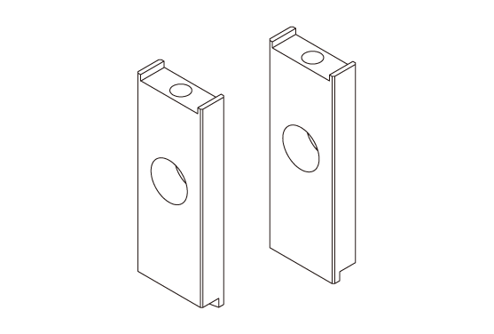

LEMON Manuals
: Even more car manuals for everyone: 1960-2025
Home
>>
Honda
>>
2016
>>
Civic LX, 4D Sedan, Automatic CVT Trans
>>
Repair and Diagnosis (Single Page)
>>
Transmission
>>
Automatic Trans
>>
Continuously Variable Transaxle (CVT) - Testing & Troubleshooting (Inspection - Rewrite)
>>
Inspection
>>
Forward Clutch Clearance Inspection (K20C2 (CVT))
>>
Notes
Forward Clutch Clearance Inspection (K20C2 (CVT)): Notes
Special Tools Required
Image
Description/Tool Number

Courtesy of HONDA, U.S.A., INC.
Clutch Compressor Attachment 07ZAE-PRP0100

Courtesy of HONDA, U.S.A., INC.
Clutch Compressor Attachment 64 mm 07ZAE-PRPA110